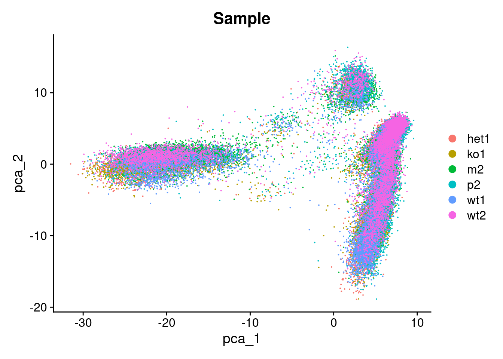
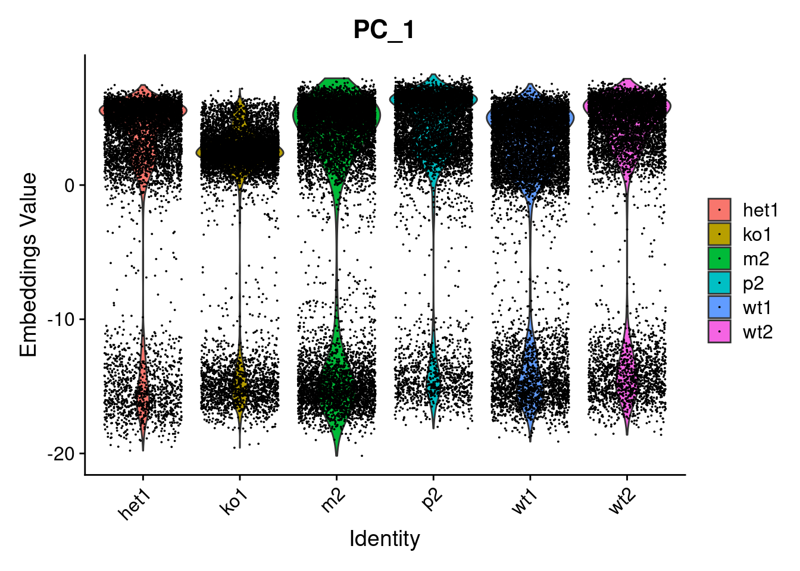
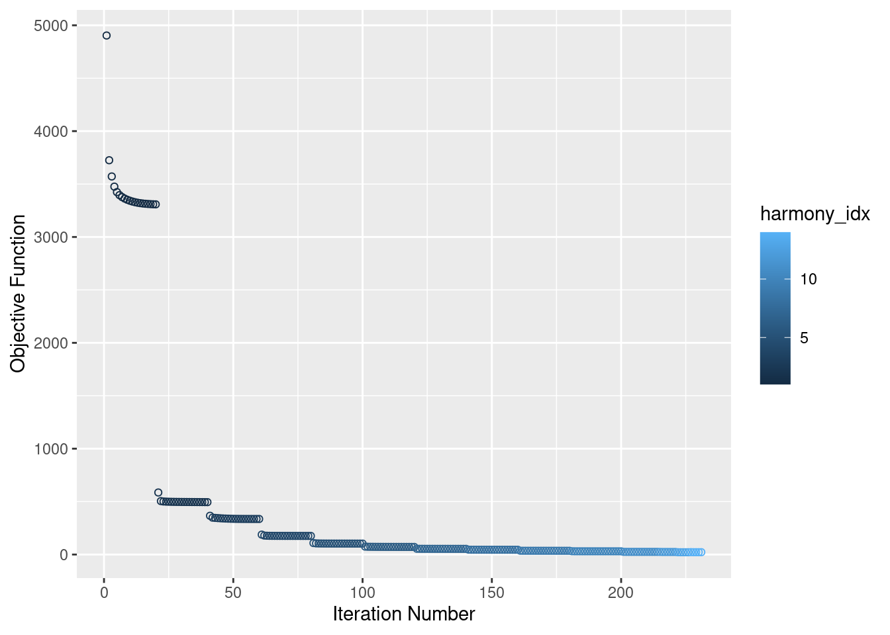
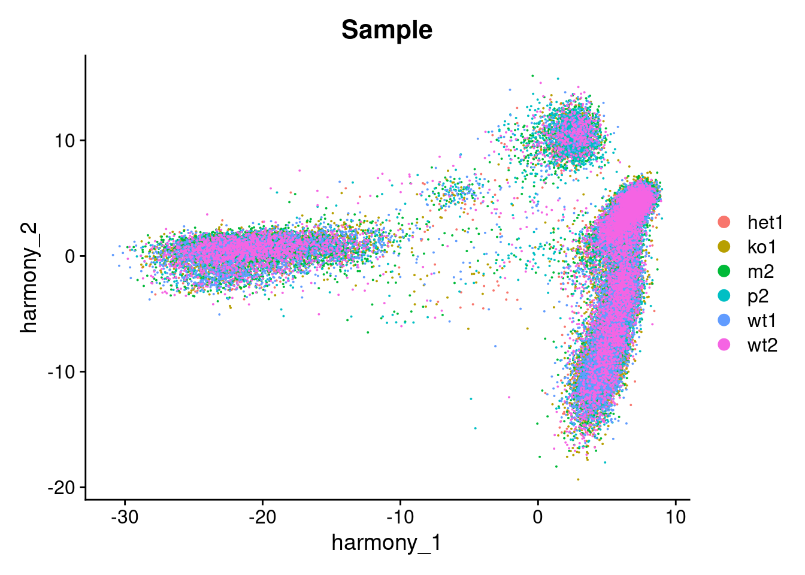
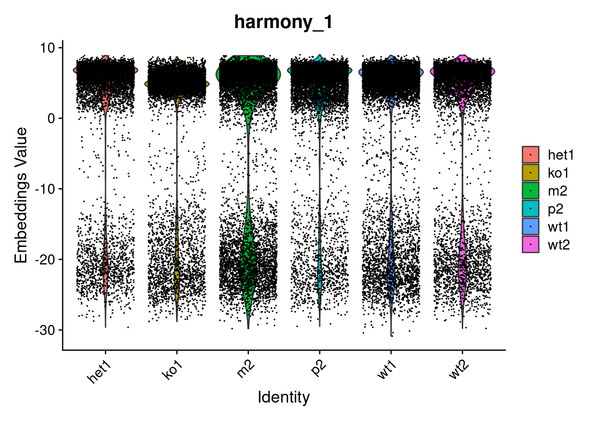
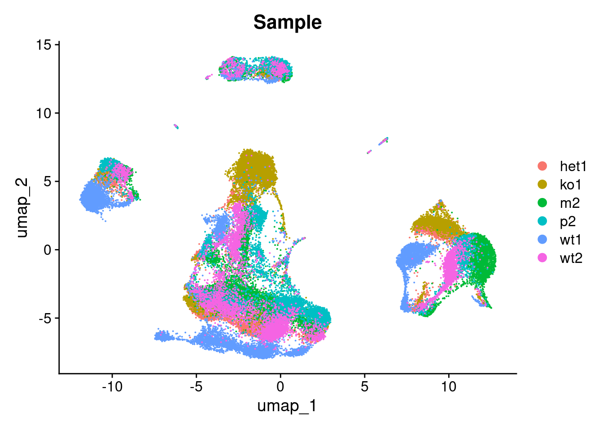
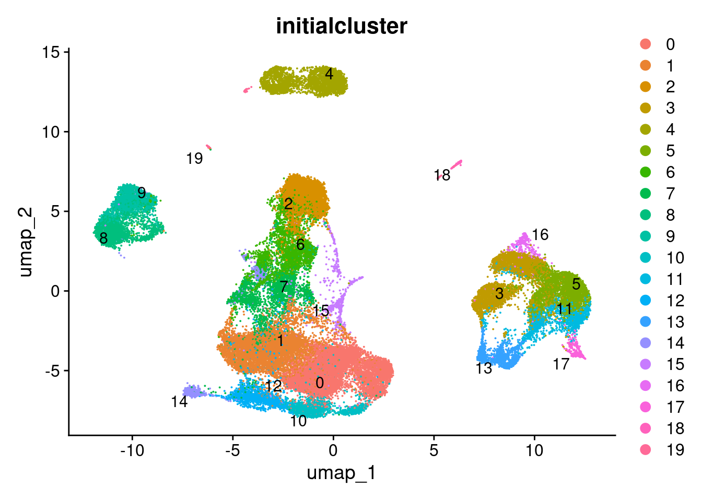
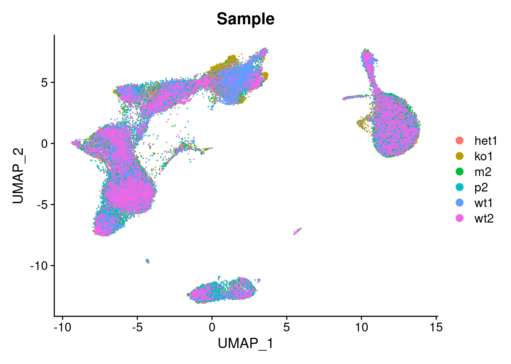
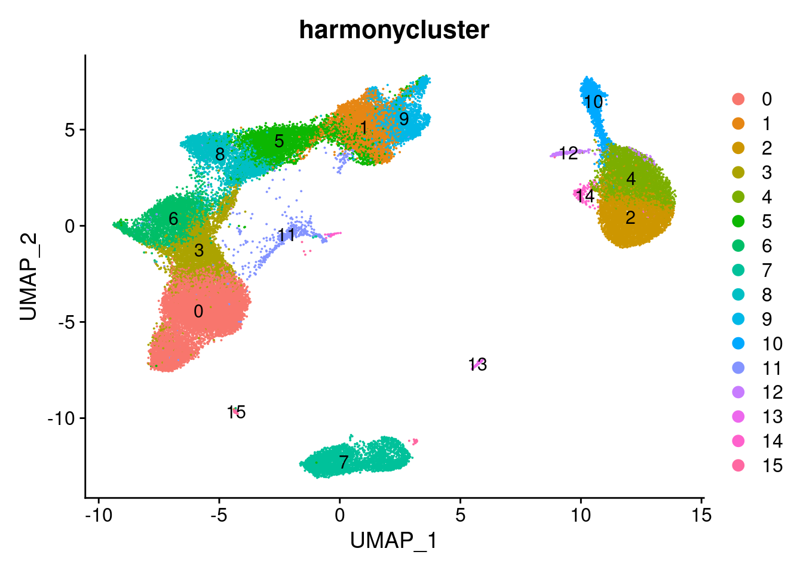

Last updated: 2021-01-10
Checks: 7 0
Knit directory: project-scrnaseq-integration-comparison/
This reproducible R Markdown analysis was created with workflowr (version 1.6.2). The Checks tab describes the reproducibility checks that were applied when the results were created. The Past versions tab lists the development history.
Great! Since the R Markdown file has been committed to the Git repository, you know the exact version of the code that produced these results.
Great job! The global environment was empty. Objects defined in the global environment can affect the analysis in your R Markdown file in unknown ways. For reproduciblity it’s best to always run the code in an empty environment.
The command set.seed(20210107) was run prior to running the code in the R Markdown file. Setting a seed ensures that any results that rely on randomness, e.g. subsampling or permutations, are reproducible.
Great job! Recording the operating system, R version, and package versions is critical for reproducibility.
Nice! There were no cached chunks for this analysis, so you can be confident that you successfully produced the results during this run.
Great job! Using relative paths to the files within your workflowr project makes it easier to run your code on other machines.
Great! You are using Git for version control. Tracking code development and connecting the code version to the results is critical for reproducibility.
The results in this page were generated with repository version 3f87359. See the Past versions tab to see a history of the changes made to the R Markdown and HTML files.
Note that you need to be careful to ensure that all relevant files for the analysis have been committed to Git prior to generating the results (you can use wflow_publish or wflow_git_commit). workflowr only checks the R Markdown file, but you know if there are other scripts or data files that it depends on. Below is the status of the Git repository when the results were generated:
Ignored files:
Ignored: .RData
Ignored: .Rhistory
Ignored: analysis/figure/
Note that any generated files, e.g. HTML, png, CSS, etc., are not included in this status report because it is ok for generated content to have uncommitted changes.
These are the previous versions of the repository in which changes were made to the R Markdown (analysis/analysiswithharmony.Rmd) and HTML (docs/analysiswithharmony.html) files. If you’ve configured a remote Git repository (see ?wflow_git_remote), click on the hyperlinks in the table below to view the files as they were in that past version.
| File | Version | Author | Date | Message |
|---|---|---|---|---|
| Rmd | 3f87359 | jeprob | 2021-01-10 | wflow_publish(“analysis/analysiswithharmony.Rmd”) |
| html | 7f8786e | jeprob | 2021-01-07 | index.html error |
| html | ed3bbe1 | jeprob | 2021-01-07 | Build site. |
| Rmd | 751203d | jeprob | 2021-01-07 | .gitignore + Rmd |
This workflow is adapted from this vignette.
library(dplyr)
library(ggplot2)
library(harmony)
library(cowplot)
library(Seurat)
set.seed(333)data_pbmc <- readRDS("./data/wonglab_10x_XLP2_sce_after_scDblFinder.rds")
data_pbmcclass: SingleCellExperiment
dim: 10081 46299
metadata(2): Samples scDblFinder.stats
assays(2): counts logcounts
rownames(10081): ENSG00000237491.AL669831.5 ENSG00000230368.FAM41C ...
ENSG00000198727.MT-CYB ENSG00000273748.AL592183.1
rowData names(3): ID Symbol Type
colnames(46299): het1.AAACCTGAGATGTTAG-1 het1.AAACCTGAGGTGGGTT-1 ...
wt2.TTTGTCATCGCCGTGA-1 wt2.TTTGTCATCTTGACGA-1
colData names(28): Sample Barcode ... scDblFinder.originAmbiguous
cluster
reducedDimNames(2): PCA UMAP
altExpNames(0):head(counts(data_pbmc))6 x 46299 sparse Matrix of class "dgCMatrix"
ENSG00000237491.AL669831.5 . . . . . . . . . . . . . . . . . . . . . . . . . .
ENSG00000230368.FAM41C . . . . . . . . . . . . . . . . . . . . . . . . . .
ENSG00000188976.NOC2L 1 . 1 . . . . . . . . . . . 1 . 1 . . . . . . . . .
ENSG00000188290.HES4 . . . . . . 2 . . . . . . . . . . . . . . . . . . .
ENSG00000187608.ISG15 . 1 . . . . 6 . . . 1 . . . . 1 . . . . . 1 . . . .
ENSG00000186891.TNFRSF18 . . . . . . . . . . . . . . . . . . . . . . . . . .
ENSG00000237491.AL669831.5 . . . . . . . . ......
ENSG00000230368.FAM41C . . . . . . . . ......
ENSG00000188976.NOC2L 1 2 . . . . 1 . ......
ENSG00000188290.HES4 . . . . . . . . ......
ENSG00000187608.ISG15 . . . . . . . . ......
ENSG00000186891.TNFRSF18 . . . . . . . . ......
.....suppressing 46265 columns in show(); maybe adjust 'options(max.print= *, width = *)'
..............................We follow the Seurat v3 dataset preprocessing process. With Harmony integration, we create only one Seurat object with all cells, instead of one Seurat object per dataset.
#set up seurat object and do seurat preprocessing
pbmc <- as.Seurat(x = data_pbmc)
pbmc <- Seurat::NormalizeData(pbmc, verbose=FALSE)
pbmc <- FindVariableFeatures(pbmc, nfeatures = 2000)
pbmc <- ScaleData(pbmc, verbose=FALSE)
pbmc <- RunPCA(pbmc, npcs=30, verbose=FALSE)We first analyzew the dataset and its uncorrected PCs:
#look at datasets in uncorrected PCs / Umap
p1_bef <- DimPlot(pbmc, reduction = 'pca', group.by = "Sample")
p1_bef
| Version | Author | Date |
|---|---|---|
| ed3bbe1 | jeprob | 2021-01-07 |
p2_bef <- VlnPlot(pbmc, features = "PC_1", group.by = "Sample", pt.size = 0.01)
p2_bef
| Version | Author | Date |
|---|---|---|
| ed3bbe1 | jeprob | 2021-01-07 |
We see that the datasets are not well integrated and cells cluster by dataset. Furthermore, the embedding values in the violin plot vary across the datasets.
Pass the Seurat object to the RunHarmony function and specify which variable to integrate out. A Seurat object is returned with corrected Harmony coordinates.
pbmc <- RunHarmony(pbmc, "Sample", plot_convergence = TRUE, max.iter.harmony = 15) 
| Version | Author | Date |
|---|---|---|
| ed3bbe1 | jeprob | 2021-01-07 |
The RunHarmony algorithm converges after 14 cycles.
#Access new Harmony embeddings
harmony_embeddings <- Embeddings(pbmc, 'harmony')
harmony_embeddings[1:3, 1:3] harmony_1 harmony_2 harmony_3
het1.AAACCTGAGATGTTAG-1 5.732279 -6.703273 2.418945
het1.AAACCTGAGGTGGGTT-1 1.623612 8.838531 11.248697
het1.AAACCTGAGTGGGTTG-1 5.403800 -9.930276 2.691926Here one can see the first 3 harmony embeddings on the first 3 genes in the dataset.
We now check if the cells are well embedded in the first two dimensions.
p1 <- DimPlot(pbmc, reduction = "harmony", group.by = "Sample")
p1
| Version | Author | Date |
|---|---|---|
| ed3bbe1 | jeprob | 2021-01-07 |
p2 <- VlnPlot(pbmc, features = "harmony_1", group.by = "Sample", pt.size = 0.01)
p2
| Version | Author | Date |
|---|---|---|
| ed3bbe1 | jeprob | 2021-01-07 |
We observee that the embedding looks better integrated compared to before and the embedding values in the violin seem more aligned.
For comparison, we first perform the same UMAP and Nearest Neighbor analyses as done with the Seurat embeddings (same dims and resolution) on the uncorrected initial PC embeddings and afterwards on the integrated Harmony embeddings.
Analysis of the uncorrected initial PC embeddings:
#Run UMAP, find clusters and plot by sample and cluster
pbmc <- RunUMAP(pbmc, reduction = 'pca', dims = 1:30)
pbmc <- FindNeighbors(pbmc, reduction='pca', dims = 1:10)
pbmc <- FindClusters(pbmc, reduction='pca', resolution = 0.8)Modularity Optimizer version 1.3.0 by Ludo Waltman and Nees Jan van Eck
Number of nodes: 46299
Number of edges: 1412412
Running Louvain algorithm...
Maximum modularity in 10 random starts: 0.8894
Number of communities: 20
Elapsed time: 24 secondshead(Idents(pbmc), 3)het1.AAACCTGAGATGTTAG-1 het1.AAACCTGAGGTGGGTT-1 het1.AAACCTGAGTGGGTTG-1
2 4 9
Levels: 0 1 2 3 4 5 6 7 8 9 10 11 12 13 14 15 16 17 18 19pbmc$initialcluster <- as.factor(Idents(pbmc))We find 20 clusters that could be identified with the initial PC embeddings.
We plot the original dataset and clusters in UMAP plots.
p3_bef <- DimPlot(pbmc, reduction = "umap", group.by = "Sample")
p3_bef
| Version | Author | Date |
|---|---|---|
| ed3bbe1 | jeprob | 2021-01-07 |
p4_bef <- DimPlot(pbmc, reduction = "umap", group.by = "initialcluster", label = TRUE, repel = TRUE)
p4_bef
| Version | Author | Date |
|---|---|---|
| ed3bbe1 | jeprob | 2021-01-07 |
Next, we perform the same downstream analysis on our integrated low dimensional Harmony embeddings.
#Run UMAP, find clusters and plot by sample and cluster
pbmc <- RunUMAP(pbmc, reduction = "harmony", dims=1:30)
pbmc <- FindNeighbors(pbmc, reduction= "harmony", dims=1:10)
pbmc <- FindClusters(pbmc, reduction="harmony", resolution=0.8)Modularity Optimizer version 1.3.0 by Ludo Waltman and Nees Jan van Eck
Number of nodes: 46299
Number of edges: 1357634
Running Louvain algorithm...
Maximum modularity in 10 random starts: 0.8800
Number of communities: 16
Elapsed time: 22 secondshead(Idents(pbmc), 3)het1.AAACCTGAGATGTTAG-1 het1.AAACCTGAGGTGGGTT-1 het1.AAACCTGAGTGGGTTG-1
5 7 1
Levels: 0 1 2 3 4 5 6 7 8 9 10 11 12 13 14 15pbmc$harmonycluster <- as.factor(Idents(pbmc))We find that 18 clusters could be identified with the integrated embedding with Harmony.
We plot the integrated dataset and clusters in UMAP plots.
p3 <- DimPlot(pbmc, reduction = "umap", group.by = "Sample")
p3
| Version | Author | Date |
|---|---|---|
| ed3bbe1 | jeprob | 2021-01-07 |
p4 <- DimPlot(pbmc, reduction = "umap", group.by="harmonycluster", label = TRUE)
p4
| Version | Author | Date |
|---|---|---|
| ed3bbe1 | jeprob | 2021-01-07 |
We see that the individual datasets are well integrated in the UMAP plot and 16 clusters can be identified.
sessionInfo()R version 4.0.3 (2020-10-10)
Platform: x86_64-pc-linux-gnu (64-bit)
Running under: Ubuntu 20.04.1 LTS
Matrix products: default
BLAS: /usr/lib/x86_64-linux-gnu/blas/libblas.so.3.9.0
LAPACK: /usr/lib/x86_64-linux-gnu/lapack/liblapack.so.3.9.0
locale:
[1] LC_CTYPE=en_US.UTF-8 LC_NUMERIC=C
[3] LC_TIME=de_CH.UTF-8 LC_COLLATE=en_US.UTF-8
[5] LC_MONETARY=de_CH.UTF-8 LC_MESSAGES=en_US.UTF-8
[7] LC_PAPER=de_CH.UTF-8 LC_NAME=C
[9] LC_ADDRESS=C LC_TELEPHONE=C
[11] LC_MEASUREMENT=de_CH.UTF-8 LC_IDENTIFICATION=C
attached base packages:
[1] parallel stats4 stats graphics grDevices utils datasets
[8] methods base
other attached packages:
[1] SingleCellExperiment_1.12.0 SummarizedExperiment_1.20.0
[3] Biobase_2.50.0 GenomicRanges_1.42.0
[5] GenomeInfoDb_1.26.2 IRanges_2.24.1
[7] S4Vectors_0.28.1 BiocGenerics_0.36.0
[9] MatrixGenerics_1.2.0 matrixStats_0.57.0
[11] Seurat_3.2.3 cowplot_1.1.1
[13] harmony_1.0 Rcpp_1.0.5
[15] ggplot2_3.3.3 dplyr_1.0.2
[17] workflowr_1.6.2
loaded via a namespace (and not attached):
[1] Rtsne_0.15 colorspace_2.0-0 deldir_0.2-3
[4] ellipsis_0.3.1 ggridges_0.5.2 rprojroot_2.0.2
[7] XVector_0.30.0 fs_1.5.0 rstudioapi_0.13
[10] spatstat.data_1.7-0 farver_2.0.3 leiden_0.3.6
[13] listenv_0.8.0 ggrepel_0.9.0 RSpectra_0.16-0
[16] codetools_0.2-18 splines_4.0.3 knitr_1.30
[19] polyclip_1.10-0 jsonlite_1.7.2 ica_1.0-2
[22] cluster_2.1.0 png_0.1-7 uwot_0.1.10
[25] shiny_1.5.0 sctransform_0.3.2 compiler_4.0.3
[28] httr_1.4.2 Matrix_1.3-2 fastmap_1.0.1
[31] lazyeval_0.2.2 later_1.1.0.1 htmltools_0.5.0
[34] tools_4.0.3 rsvd_1.0.3 igraph_1.2.6
[37] GenomeInfoDbData_1.2.4 gtable_0.3.0 glue_1.4.2
[40] RANN_2.6.1 reshape2_1.4.4 spatstat_1.64-1
[43] scattermore_0.7 vctrs_0.3.6 nlme_3.1-151
[46] lmtest_0.9-38 xfun_0.19 stringr_1.4.0
[49] globals_0.14.0 mime_0.9 miniUI_0.1.1.1
[52] lifecycle_0.2.0 irlba_2.3.3 goftest_1.2-2
[55] future_1.21.0 zlibbioc_1.36.0 MASS_7.3-53
[58] zoo_1.8-8 scales_1.1.1 promises_1.1.1
[61] spatstat.utils_1.17-0 RColorBrewer_1.1-2 yaml_2.2.1
[64] reticulate_1.18 pbapply_1.4-3 gridExtra_2.3
[67] rpart_4.1-15 stringi_1.5.3 bitops_1.0-6
[70] rlang_0.4.10 pkgconfig_2.0.3 evaluate_0.14
[73] lattice_0.20-41 ROCR_1.0-11 purrr_0.3.4
[76] tensor_1.5 labeling_0.4.2 patchwork_1.1.1
[79] htmlwidgets_1.5.3 tidyselect_1.1.0 parallelly_1.23.0
[82] RcppAnnoy_0.0.18 plyr_1.8.6 magrittr_2.0.1
[85] R6_2.5.0 generics_0.1.0 DelayedArray_0.16.0
[88] pillar_1.4.7 whisker_0.4 withr_2.3.0
[91] mgcv_1.8-33 fitdistrplus_1.1-3 RCurl_1.98-1.2
[94] survival_3.2-7 abind_1.4-5 tibble_3.0.4
[97] future.apply_1.7.0 crayon_1.3.4 KernSmooth_2.23-18
[100] plotly_4.9.2.2 rmarkdown_2.6 grid_4.0.3
[103] data.table_1.13.6 git2r_0.27.1 digest_0.6.27
[106] xtable_1.8-4 tidyr_1.1.2 httpuv_1.5.4
[109] munsell_0.5.0 viridisLite_0.3.0